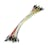

Things used in this project
Hardware components |
|
| QRD1114 Optical Sensor | |
| Arduino Mega 2560 | |
|  | Jumper wires (generic) |
Software apps and online services |
|

|
Arduino IDE |
Hand tools and fabrication machines |
|

|
Soldering iron (generic) |

|
Solder Flux, Soldering |
Story
Computers are an indispensable tool nowadays and most of us take them for granted. However, they are not so easy to use by people without hand/arm function, maybe even unable to speak.
As the Contest Masters suggest, many solutions exist, for example some can move their head, neck, tongue, eyes, and (sip and puff) in addition to voice commands as inputs. Any of these can be used to drive buttons or joysticks for typing text or selecting on-screen items, but most are slow or cumbersome.
Puff-Suck (or Sip and Puff) systems are one of the ways used by people with little or no arms mobility to communicate or interact with computers. (Voice control is a non-ideal computer interface except in some controlled environments, although it’s getting better all the time! It still requires either cloud or a lot of processing power.)
Usually, a screen displaying a keyboard allows the user to move a cursor (using some kind of joystick, buttons or even eye tracking) to a desired letter and then puff/suck to select it. Move again to the next letter, puff/suck again. Again and again.
"There has to be a better way!" And there is.
A Puff-Suck system has three states:
- Puffing
- Sucking
- Neither
Since I had some experience with Morse code, I thought "Huh, a Morse keyer, (single or dual-lever paddle, AKA "Morse Bug") also has three states... so one could signal Morse code with a Puff-Suck system."
You may be thinking... well, you need to learn Morse code.
Morse code is not very difficult or time-consuming to learn (a few days should get you going, the speed will get faster as you use it), and the time saved by using this device grows to much more than the learning time. Plus, IT'S COOL!
With a Morse Bug, one side is used for "dots" or "dits", while the other is used for "dashes" or "dahs". If you continue to hold the dot lever, it will keep sending dots until you release it, and same for dashes.
And thus, the idea for the Puff-Suck interface was born. Of course, research was done, and, to prove that the idea wasn’t crazy, a similar commercial device was found, the TandemMaster. It’s probably a very good device, but more expensive and doesn’t include the puff/suck switch. Their links to purchase the switch seem to be out of date. However, it is clear that a lot of thought and design time were put into the device.
On to the build.
You can see in action here:
You will see that it is very much a proof of concept, but fully functional. Being open source/hardware one could use a third party switch assembly, and customize the software to work with any codes a user may have already learned.
A tube connected to a custom-made bipolar pressure switch drives an Arduino which translates puffing and sucking into Morse code and then into text which is sent to the computer.Puffs make repeating short pulses (dots) and sucks repeating longer pulses (dashes) just like ham radio amateurs do with a dual-lever paddle.
There are two main electronic parts: one is an Arduino micro-controller board (pretty much any model will do) and the other one is an optical switch controlled by puffing or sucking into a small cavity with a membrane at one end.
For prototyping purposes we used an Arduino Mega 2560 just because it was handy.
If we actually want to emulate a keyboard and a mouse we would likely use a small Arduino Leonardo variant as the built-in USB can act as HID (Human Interface Device, which mice and keyboards are). Furthermore, the device could be made wireless by using the Bluetooth capabilities of an ESP32 that can still run Arduino code. The code would have to be modified for using the Bluetooth in HID mode.
I’ve been wondering for a long time how to make a switch that's easy to make and use without spending a lot. I think I got to a pretty good solution that has only one moving part, and some cheap electro-optical components.
The electro-optical components are an IR (Infra-Red) LED (Light Emitting Diode) and an Opto-Transistor, both obtained from cheap "QRD1114" Optical Detectors. Normally the LED and Opto-Transistor are held by a shell and point in the same direction. If they are facing a nearby reflective surface and the LED is powered up, the IR "light" will be reflected onto the Opto-Transistor which will start to conduct.
I removed them from the holding shell and placed them on opposite sides of a film canister cap
so that when the LED is powered up the IR "light" shines straight onto the Opto-Transistor,
unless the membrane gets in the way.
The LED and the Opto-Transistor are placed inside, pins pushed through the walls of the canister cap, while being heated with the soldering iron.
The moving part is a membrane cut from a rubber glove (could use a balloon) and is loosely glued onto an open side of the canister cap, but not before the LED and the Opto-Transistor are placed inside.
We place one pair on each side of the membrane so one is blocked when puffing and one when sucking.
The first cap has a hole and a tube connected to it with hot-glue. The tube is from a pen, but some arrangement that gets rid of saliva should be connected to it (this is a prototype :-)
After placing the IR components in the second cap and gluing them together, we connect some wires and resistors to a connector glued to the back of the second cap, according to the following schematic:
Out1 and Out2 are normally Low (near 0V) because the IR "light" can get to the Opto-Transistors therefore keeping them "open" (slang for conducting) so they pull (slang for connecting) the outputs to ground.
When we suck or puff through the tube, the membrane is pulled or pushed and blocks one or the other light paths therefore closing one of the Opto-Transistors so that output will go High.
The outputs, ground and power get connected to two digital inputs of the Arduino.And this is how it looks from the back:
To connect everything together, we see from the arduino code, that:
- #define DIT_PIN 8
- #define DAH_PIN 10
- #define LED 13
- #define SPEAKER 11
So the final prototype looks like this:
Here's a close up of the "signal" pins:
... and we get Power (5V) and Ground (GND) from tho other Arduino pins:
Don't forget to connect a capacitor in series with the speaker, mine is soldered straight on the speaker to make an "assembly" rather than being "in the air". Any value between 1microFarad (uF) and 1000uF should work, make sure that the "+" (anode) of the capacitor (if polarized) "points" towards the wire connected to pin 11, not GND.
Load the code into the Arduino IDE, choose your board and program it in. Then start the Arduino Terminal, set it to 9600bps and Puff or Suck short bursts, you should get lucky and see some characters coming to the terminal even before you know Morse code.
You can test if your Arduino setup is working without the Puff-Suck interface bu just using two test wires as in the video below:
The red wires go to the speaker, We use the orange wires for testing, they normally carry the signals that will come from the Puff-Suck interface.
The code as is, does not emulate a keyboard, it sends characters through the serial port. This can be captured for further use, but for the best experience one should use a Leonardo (for wired USB Keyboard/mouse emulation) or ESP32 (for Bluetooth wireless) with the needed code changes.
Special codes for moving mouse, Alt-Tab and any other control sequences are left to the user's choice as they can have preferences, or they could be further improvements to this project.